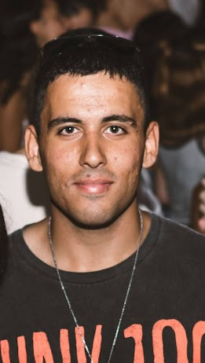

סמל עוז דניאל
בן 19, תושב העיר כפר סבא, בוגר חטיבת בר לב ותיכון גלילי, לוחם בגדוד 77 בעוצבת "סער מגולן", נחטף בידי חמאס והוכרז כחלל צה"ל בתאריך 25/2/2024.
הותיר לאחריו את הוריו, אמיר ומירב, ואת אחותו התאומה הדר.
עוז היה גיטריסט ומוזיקאי מחונן, שהאמין שכוחה של המוזיקה מסוגלת לשנות את העולם. הלהקה האהובה עליו הייתה "גאנז אנד רוזס".
הוא אהב להיות בחברת אדם והיה חבר אמיתי, אחד שיקשיב לך תמיד ויתן לך לשפוך את הכל מולו. עוז אהב את החיים, היה בעל חוש הומור וחיוך ענק מדבק, חבריו מספרים שתמיד היה מוקף חברים, הוא תמיד היה האחד שהצחיק את כולם.
עוז נלחם עד הרגע האחרון בגבול רצועת עזה ונחטף בשבת השחורה יחד עם חבריו לטנק, וגופתו עדיין מוחזקת בשבי.